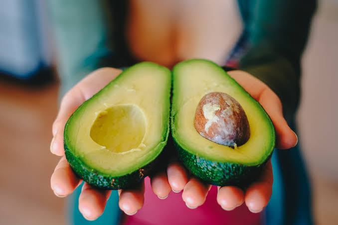

1º XLR8
XLR8 lembra um Velociraptor semi-blindado. Alienígena esbelto, com braços finos que possuem três garras em cada mão, e duas garras nos pés por cima de bolas pretas que as usa quando corre, além de dar suporte as suas longas pernas.
WIKI